地政学
バセテールはリーワード諸島の小国家を束ねる湾岸首都です。米州、英連邦、カリブ共同体、観光市場、海上交通のあいだで、港と官庁が外交と生活の窓口になります。小さな湾が国家の判断を受け止めます。日々深く。
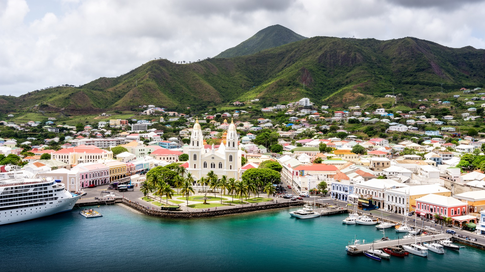
🇰🇳 セントクリストファー・ネービス / セントキッツ島 / World City Atlas
セントキッツ島南西岸の湾に置かれた首都です。小さな市街に港、官庁、独立広場、クルーズ観光、金融、教会、砂糖プランテーションの記憶、ハリケーンへの備えが重なります。
小国家の港湾首都
バセテールは大都市ではありませんが、空港、港、官庁、金融、観光案内、歴史地区が短い距離に集まります。街の規模の小ささは弱さであると同時に、国家の動きが見えやすい濃さでもあります。
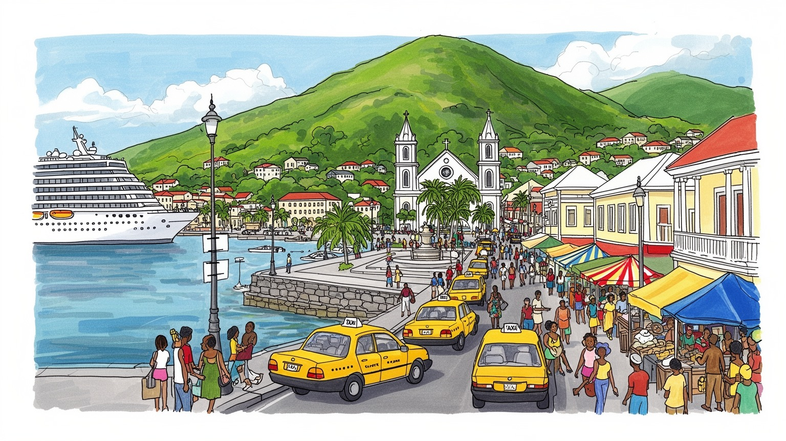
バセテールはリーワード諸島の小国家を束ねる湾岸首都です。米州、英連邦、カリブ共同体、観光市場、海上交通のあいだで、港と官庁が外交と生活の窓口になります。小さな湾が国家の判断を受け止めます。日々深く。
観光、港湾、行政、金融、教育、小売、建設、タクシー、宿泊が雇用を支えます。寄港日には屋台や土産店も動き、季節変動と物価が家計を揺らします。若者の技能形成も重いテーマです。学校帰りの子どもも店先を通ります。
英国植民地の街路、教会、カーニバル、クレオールの話し言葉、アフリカ系住民の記憶、周辺島からの移動が重なります。礼拝、合唱、ラジオの音楽、家族行事が港町の公共性を保ちます。夜の広場にも音が残ります。
旅行者は港、要塞、旧市街、鉄道、浜辺へ向かいますが、住民は住宅費、水、輸入品価格、交通、学校、介護、ハリケーン対策を毎日考えます。海風と市場の匂いも暮らしを刻みます。高齢者の足元も大切になります。
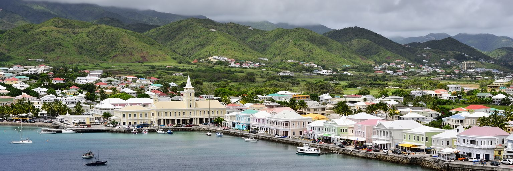
バセテールはセントキッツ島南西岸の浅い湾に面し、背後には火山島らしい丘陵と山地が迫ります。市街の面積は小さく、港、官庁、広場、教会、商店街、学校、住宅地が歩いて把握できる距離に集まっています。この密度は、島国の首都を読むうえで重要です。海は観光客と輸入品を運びますが、同時にハリケーン、高潮、海面上昇の危険も運びます。丘は眺望と涼しさを与える一方、道路や住宅地を限られた平地へ押し込みます。朝の潮の匂い、昼の強い日差し、夕方のバスや車の音が、湾岸の時間をはっきり分けます。バセテールの地形は、大きな港湾都市のように背後圏を広く支配するものとは違います。むしろ、セントキッツ島内の集落、ネービス島との連絡、国際空港、クルーズ船の岸壁を短い都市距離で結び、小国家の制度を濃縮しています。湾岸の低地には植民地期からの街路が残り、山側へ向かう道には住宅と学校が並びます。ひとつの道路整備や港湾投資が、住民の通勤、子どもの通学、観光収入、災害時の避難に直接響きます。湾の西と東では道路の使われ方も異なり、港に近い商業地、住宅の斜面、空港へ向かう動線が互いに影響します。潮風や日差しは建物の維持も左右します。バセテールを見ることは、海に開いた明るい港町を見るだけではなく、限られた平地で行政、観光、住宅、防災をどう重ねるかを読むことです。小さな湾は、国土の制約と機会を同時に映しています。
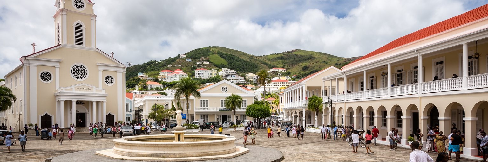
バセテールの中心を歩くと、英国植民地期の街路、広場、教会、時計塔、裁判所のような公共建築が、独立国家の日常に組み込まれていることが分かります。独立広場は、その名前が示す通り、奴隷制、植民地統治、解放、自治、独立後の国家建設を重ねて考える場所です。整った街路の背後には、砂糖プランテーション、奴隷労働、港からの輸出、英国海軍力、カリブ海の競争がありました。観光案内では色鮮やかな歴史地区として紹介されますが、その美しさだけを消費すると、街が背負う暴力の記憶を見落とします。独立後のバセテールは、植民地が残した行政空間を、議会、官庁、裁判、教育、商業のために使い直してきました。旧い建物を保存することは、過去を飾るだけではありません。誰がこの街を築き、誰が排除され、どのような労働が富を生んだのかを、現在の市民が学ぶ入口になります。小さな首都では、歴史的な建物と日常の用事が近接します。住民は観光客の視線を受けながら、役所へ行き、買い物をし、学校へ通います。保存の議論は外壁の色や観光動線だけでなく、地元の記憶、学校教育、修復技術、公共建築の使いやすさにも関わります。日常の利用が遺産を支えています。街の誇りです。バセテールの植民地景観は、過去を閉じ込めた博物館ではなく、独立国家が毎日使う生きた都市基盤です。
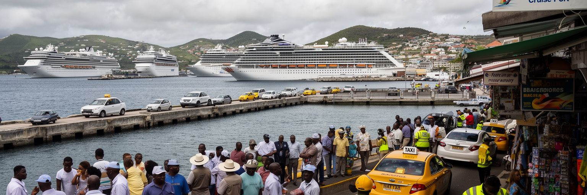
バセテールの港は、輸入品と観光客が入る国家の玄関です。クルーズ船が着く日には、港周辺の商店、タクシー、ガイド、土産物店、飲食店、警備、清掃、港湾労働が一気に動きます。露店では果物の甘い匂いと揚げ物の油の匂いが混じり、運転手の呼び声やラジオの音楽が岸壁の空気を変えます。短時間で多数の旅行者が市街へ流れ込むため、独立広場、要塞へのツアー、鉄道観光、ビーチ送迎が港を起点に組み立てられます。この経済は現金収入を生む一方、天候、寄港スケジュール、燃料価格、国際景気に左右されます。クルーズ客は滞在時間が短く、宿泊観光より地元に残る支出が限られることもあります。港湾地区が観光向けに整えられるほど、住民の日常の買い物や移動と観光動線の距離も近くなります。大型船に対応する投資は国の競争力を高めますが、岸壁の整備だけで地域の所得が広がるとは限りません。ガイドの訓練、地元業者への機会、交通整理、歩行者空間、文化説明の質が大切です。港はまた、食料、建材、燃料、医薬品の入口でもあります。寄港が少ない週には売上が落ち、家族経営の店、個人タクシー、路上の小商いほど収入の波を受けます。港で働く人の技能や安全も重要です。観光の港と生活物資の港が同じ湾にあるため、バセテールの経済は世界市場の変化をすぐに受けます。港を読むことは、明るいクルーズ観光の背後で、輸入依存と小さな家計がどう結びつくかを見ることでもあります。
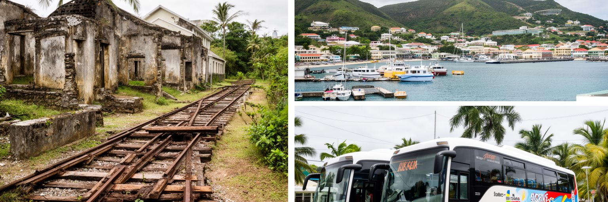
セントキッツ島の歴史を支えた砂糖産業は、バセテールの港と深く結びついていました。プランテーションで作られた砂糖は港から外へ出され、植民地経済の富を形づくりました。しかし二十世紀後半から競争力は弱まり、国は観光、金融、教育、建設、サービス業へ軸足を移してきました。この転換は、統計上の産業構造の変化だけではありません。農園労働、土地利用、鉄道、農村集落、家族の職業記憶が、観光地や住宅地、遺産ツアーへ読み替えられていく過程です。砂糖列車の観光利用は、かつての生産インフラを新しい収入へ変える象徴ですが、過去の労働の苦さも忘れられません。サービス経済は若者に新しい仕事を与えますが、接客、語学、情報技術、金融知識、起業支援が必要です。観光が季節や外部需要に揺れるほど、安定した賃金や社会保障は課題になります。金融や市民権投資のような制度収入も、小国の財政を支える一方、国際的な監視や評判リスクを伴います。労働者にとって転換は職種の変化であり、農園の技能がそのままホテルや事務職へ移るわけではありません。バセテールの産業転換を読むには、砂糖を過去の産物として片づけず、土地、労働、記憶、国家財政がどのように再編されたのかを見る必要があります。港町の現在の明るさは、長い単一作物経済から抜け出す努力の上にあります。
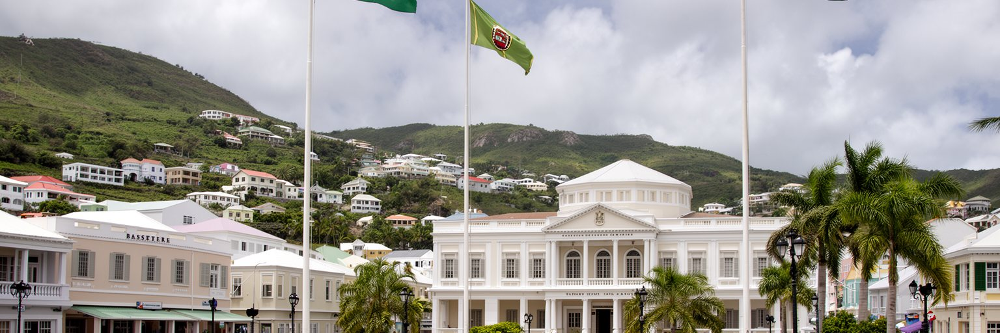
バセテールはセントクリストファー・ネービス連邦の首都として、首相府、議会、裁判、官庁、外交窓口、中央銀行や地域機関との連絡を担います。人口規模が小さい国では、行政と市民の距離が大都市国家とは異なります。政策決定者、事業者、教会関係者、観光業者、学校、家族のネットワークが近く、ひとつの決定が日常の人間関係の中で受け止められます。小国家行政の強みは、意思決定の速さと顔の見える調整です。一方で、専門人材、監督機関、災害対応、医療、統計、外交交渉を少ない人数で支える難しさもあります。ネービス島には独自の自治と政治的な重みがあり、バセテールの首都性は二島の関係を丁寧に扱う必要があります。観光、金融、気候変動、国境管理、感染症、教育、移民政策は、国内だけで完結しません。カリブ海の地域協力、英連邦、米国との関係、国際金融規制が、官庁の仕事を大きく左右します。市民権投資や金融透明性への国際的な視線も、政府の信用と財政を左右する実務になります。その信用は観光投資にも波及します。市街が小さいため、政治的な緊張や選挙の熱気も広場や街路で見えやすくなります。バセテールの政治を読むことは、国家の規模が小さいほど簡単になると考えることではありません。むしろ限られた人材で世界の制度に対応し、住民の生活を守る高度な調整を読むことです。
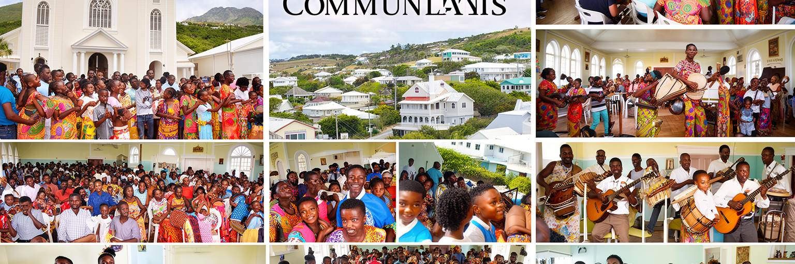
バセテールの文化は、教会、学校、家族行事、カーニバル、音楽、スポーツ、港町の会話によって形づくられます。英国国教会、カトリック、メソジスト、福音派などの教会は、礼拝の場であるだけでなく、教育、福祉、葬儀、相談、地域の情報交換を支えてきました。日曜日の服装、合唱、結婚式、追悼、学校行事は、都市の時間を刻みます。カーニバルや音楽は観光客にも見える華やかな顔ですが、住民にとっては奴隷制後の表現、地域の競争、若者の創造性、家族の誇りを含みます。夜にはバーや広場の近くでカリプソやソカの響きが聞こえ、ラジオやSNSの告知が週末の催し、選挙の話題、スポーツ結果を素早く広げます。クリケットやサッカーの話題、港周辺の商売、教会のネットワークは、政治や仕事の情報とも結びつきます。小さな社会では、人を知っていることが助けになる一方、噂や監視の圧力にもなります。移民や周辺島から来た労働者は、こうした共同体に入るための言葉やつながりを探します。祭りの準備や教会の奉仕は、世代を越えて技能と責任を渡す場にもなります。学校の合唱や地域スポーツも帰属意識を育てます。バセテールの宗教と文化を読むには、建物の古さだけでなく、人が困った時にどこへ向かい、だれが葬儀費用を助け、どの行事が若者に居場所を与えるのかを見る必要があります。教会と祝祭は、観光パンフレットの彩りではなく、小さな首都が社会的なまとまりを維持する重要な仕組みです。
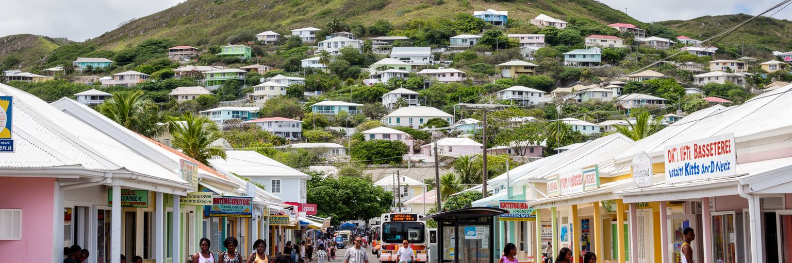
バセテールの日常生活は、観光客が歩く港や広場から少し離れた住宅地、学校、商店、バス停、教会、海辺の仕事場にあります。小さな都市なので、住民は短い距離で多くの用事を済ませられますが、住宅費、輸入品価格、燃料、電気、水道、医療費の負担は軽くありません。島国では多くの商品が外から入り、為替や輸送費の変化が店頭価格へすぐ反映されます。市場や小店では魚、鶏料理、ジョニーケーキ、果物、日用品が並び、買い物の声と車の音、強い日差しの下の香辛料の匂いが生活の背景になります。観光業で働く人は、船の寄港日やホテル需要に収入を左右されやすく、家計は季節変動に備える必要があります。住宅地では、家族の近さが子育てや介護を支えますが、若者が独立した住まいを得ることは難しい場合があります。学校と職場が近いことは便利ですが、高等教育や専門医療、特殊な仕事を求めると、国外や他地域とのつながりが必要になります。バスやタクシーは生活と観光を同時に運び、道路の混雑や整備状況は通勤にも観光にも影響します。高齢者や子どもにとっては、強い日差しや坂道、雨の日の排水も移動の負担になります。安全で歩きやすい歩道、日陰、水場、公共トイレ、夜間照明は、派手ではありませんが生活の質を決めます。近所の助け合いは、災害時にも大切な力になります。クルーズ客の短い滞在だけを見ると、住民が毎日管理している生活費、家族の支援、災害への備えが見えなくなります。観光のすぐ近くに、島の暮らしがあります。
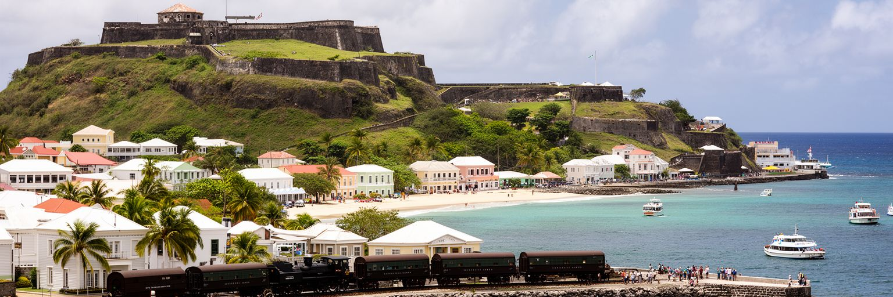
バセテール観光は、港から始まる短い動線と、島全体へ広がる遺産の動線が重なります。市街では独立広場、教会、古い公共建築、商店街を歩き、郊外ではブリムストーン・ヒル要塞、砂糖鉄道、プランテーション跡、ビーチ、山の眺望へ向かいます。要塞はカリブ海の軍事競争と植民地支配を語る世界遺産であり、単なる絶景スポットではありません。石積みの砦は、欧州列強、奴隷労働、海上貿易、防衛、島の地形を同時に示します。観光が経済の中心になるほど、ガイドの説明力、交通の安全、遺産の保存、地元事業者への利益配分が重要になります。港周辺で短時間に買い物だけをする旅では、島の歴史の重さを理解しにくいです。逆に、広場、要塞、鉄道、海岸をつないで歩くと、砂糖の島から観光の島へ移った時間が見えてきます。遺産は収入源であると同時に、住民が自分たちの過去を語る教育資源でもあります。観光客が写真を撮る場所は、住民にとって通学路や祈りの場でもあります。混雑する寄港日と静かな日では、同じ街路でも表情が大きく変わります。地元ガイドの語りが、短い滞在に厚みを与えます。地域の収入にも響きます。バセテールの観光を成熟させるには、景色を売るだけでなく、歴史の痛み、自然の脆さ、地域の仕事を丁寧に結ぶ必要があります。小さな首都の旅は、短くても多層的です。
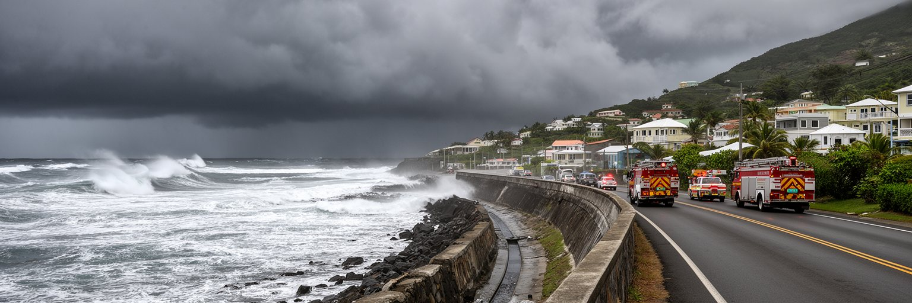
バセテールの魅力である海と青い空は、同時に大きなリスクでもあります。カリブ海の小島嶼国家は、ハリケーン、高潮、豪雨、干ばつ、海面上昇、サンゴ礁の劣化、海岸侵食に強く影響されます。首都の港、道路、電力、通信、病院、学校、観光施設が狭い沿岸低地に集まるため、ひとつの強い嵐が国家機能と家計を同時に止める可能性があります。災害は自然現象だけで決まりません。住宅の強度、排水、避難場所、保険、貯蓄、近所の助け合い、政府の警報、復旧資金によって被害の大きさが変わります。観光施設が早く復旧しても、低所得世帯の屋根、家財、学校用品が戻らなければ、社会の回復は不十分です。水資源も重要です。乾季や観光需要の増加は、水の供給と価格に影響します。気候変動への適応は、海岸に壁を作ることだけではありません。土地利用、建築基準、湿地や斜面の管理、再生可能エネルギー、非常用通信、地域訓練を組み合わせる必要があります。ホテルや港だけでなく、学校、診療所、住宅地の復旧計画を同じ優先度で考える必要があります。バセテールの防災を読むことは、美しいリゾートの背景にある脆さを読むことです。小国家では、災害後に国外支援や保険制度へ頼る割合も大きくなります。だからこそ、日常の整備と地域の備えが、観光地の競争力以上に住民の尊厳を守ります。
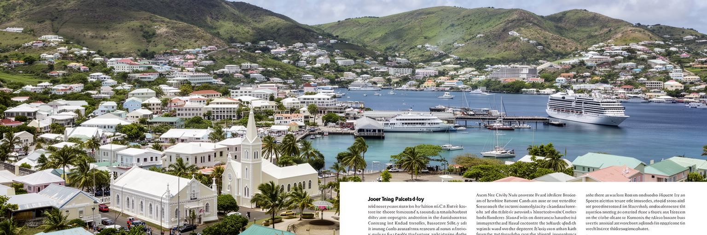
バセテールは人口規模で見れば小さな首都ですが、都市の重要性は規模だけでは測れません。ここには、カリブ海の港、英連邦の制度、植民地支配の記憶、奴隷制後の社会、砂糖産業から観光と金融への転換、教会と祝祭、二島国家の政治、ハリケーンへの備えが短い距離に折り畳まれています。港に船が着けば商店とタクシーが動き、官庁の判断は島の学校や住宅政策に響き、世界の金融規制は小さな事務所の仕事を変えます。観光客には穏やかな湾の街に見えますが、住民にとっては輸入品価格、住宅費、仕事の季節性、水、医療、若者の将来を考える生活の場です。歴史地区の美しさも、砂糖プランテーションと植民地統治の記憶を含めて読まなければ浅くなります。バセテールの面白さは、国家の顔と近所の暮らしが切り離せない点にあります。世界都市を巨大な経済集積だけで考えると、このような小さな首都は見えにくくなります。しかし、気候変動、観光依存、金融規制、植民地遺産、小国家外交は、むしろバセテールのような場所で具体的に現れます。都市の小ささは、問題を小さくするのではなく、世界の制度が家計へ届く距離を短くします。湾を歩くことは、カリブ海の明るさだけでなく、小さな国が世界と交渉しながら暮らしを守る実務を読むことです。小さな港の街は、世界の制度と島の生活を同時に映しています。